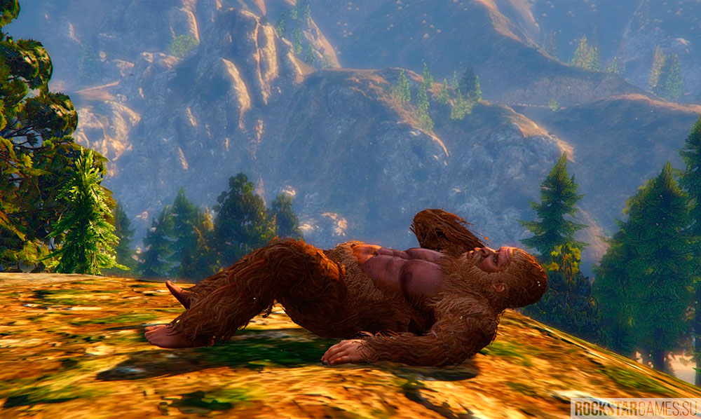
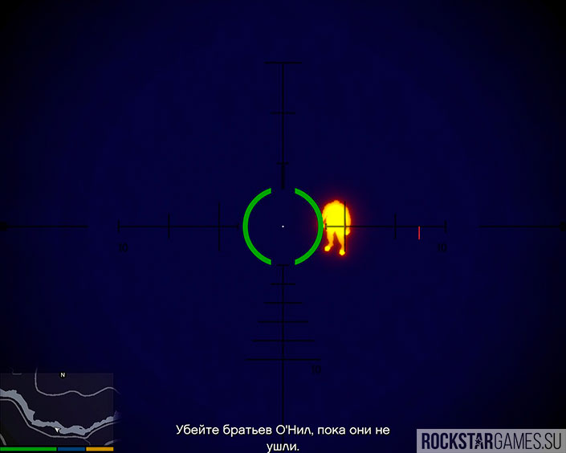

Бигфут, Снежный человек, Йети

Многие годы поклонников GTA San Andreas томил миф о Снежном человеке, который об итает в местных лесах, между горой Чилиад и Лос-Сантосом. Данный миф появился из-за интервью которое дал один из разработчиков. На вопрос «Есть ли в GTA SA какие-нибудь монстры» он ответил: «Конеч но же есть». Вот только он имел в виду одноимённый транспорт — Monster. В GTA V же, мы имеем вместо Monster машину Marshall, а вместо пустых слухов — достоверные факты о Йети. Так, в миссии «Хищник», когда вам . дадут в руки снайперскую винтовку, включайте тепловизор и ищите под ёлками томную фигуру Снежного человека Убить его не получится, да и спустя несколько секунд он просто исчезнет. А что вы ещё хотели от мифического существа?
После прохождения игры на заветные 100%, у Франклина откроется дополнительная миссия чудаков и незнакомцев — «Оставшийся». В этой миссии игрок должен будет поймать настоящего Бигфута! Вот только в конце выяснится, что это был переодетый фрик… Однако, после останутся вопросы: как он смог выстоять против обильного количества пуль, и каким образом он перемещается из кустов в кусты, игнорируя большие расстояния между ними. Но спишем всё на игровую условность